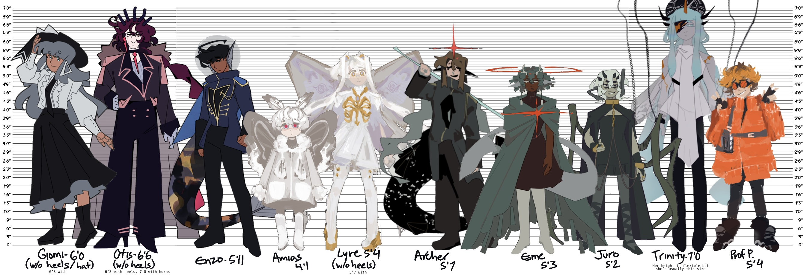
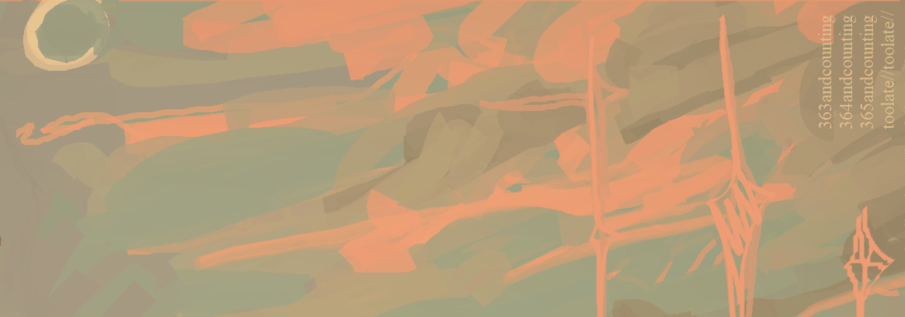
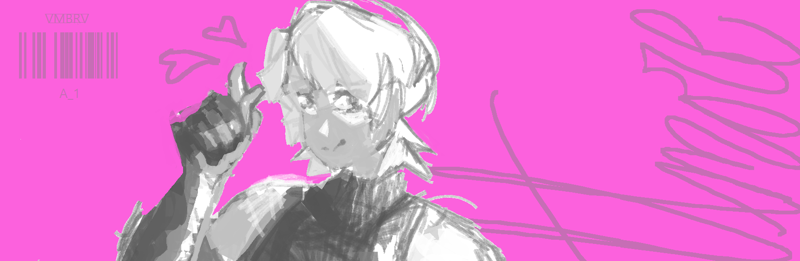

◊OC DATABASE
brief intros to my characters and their story projects!
contents: [ paradise's tragicomedy | centuriae | plastic mind | disclaimer ]
paradise's tragicomedy
"up in the sky is a graveyard." -- PTC is a space fantasy & cosmic drama about dead worlds, and people who should have died. survivors are caught up in an attempt to revive what they'd once lost.
Giomi
Living doll, historian, academic. Giomi is obsessively deciphering a series of runes that are (supposedly) responsible for reviving the dead.
Always chipper and happy to teach, she will gladly geek out about her dead-end findings for eons. Her dedication did not stem from any desire to save the dead, however. But rather, from the fact she is missing all of her memories up until her discovery of these runes.
A shady past, an eccentric passion, and a cutthroat desire for knowledge. Despite her admirable profession, most tend to stay clear of her.
Archer
When the interplanetary war his planet was engaged in ended in the total annihilation of his sol system, Archer didn't despair.
With a hole through his chest, hollow eyes as black as the sky, and a body with no heart - inexplicably he's still alive - and he's here for a reason. His existence, he deemed, is proof that the universe has allowed him to resume his duty.
The war is over, but his job isn't, not until every other surviving enemy has been wiped off the galaxy.
Enzo
An ex-soldier and traitor who longs to return to the place he hated so much, for reasons unclear in his eyes.
Soft-tempered & introspective, but out of the public eye is withdrawn and easily peeved.
Otis
The formerly adored ex-emperor of a nation that later turned to exile him. Presently, Otis looks over a ragtag group of survivors from lost worlds, and although he is callous and hard-headed, values those he considers weaker than him.
Esme
Demigod whose domain is light and memory, Esme is on an endless quest for answers that might not even exist. After her unwilling ascension, tries hard to uncover why the greater gods, so tightly bound to fate, had to disappear.
Juro
The mischievous "right eye of the gods," molded and given life to relay messages from the divine to mortalkind, who up until now, has been in hibernation for decades. Now, they reawaken, preaching with fondness their visions of the end.
Amias
A kid nomad and survivalist searching to be reunited with his missing sister, Lyre. Standoffish, self-serving, yet naturally inquisitive, Amias is forever in search of a concrete and predictable world. (design to be redone)

Lyre
A manmade god, created from a series of experiments, who views her newfound power with malice. Taking on the divine mantle of 'judgment,' she seeks to remedy the wrongs of the universe, but gets it scarily wrong.
PTC height chart
{kind=link}

Centuriae
"Meet you at the end of time."
Marcene
A philosopher, poet, and researcher of the paranormal: Marcene's increasingly questionable teachings led her to be ostracized from her community. She appears to be in her forties though she's lived much, much longer than that. She made a promise to someone, to meet them at the end of the world, and she intends to keep it.
Callisto
Callisto died a hundred years ago, slain a gladiator. Yet, he opens his eyes in the present day, revived in a murky tomb with a sword at his side.
Re-seeking purpose while battling the cryptid entity which now shares his human shell, Callisto has been led to believe that the reasoning to his revival is to end humanity.
Isra
A people person and dealer of forbidden knowledge, but if he hands you a contract, just make sure to read the fine print! Lets the client choose the price they pay, though it never really goes that well for them. Knew Callisto from his gladiator days.
plastic mind
"about an artist, and android, and a tech corporation going down in flames."
[reference sheets are witheld]
keyata
Keyata is a painting prodigy who tries her best to to reconnect with her passions after the recent loss of her eyesight.
Naturally shy and soft-spoken, the type to choose her words carefully. Too timid to break rules but too much of a thinker to stay still, Keyata wants a lot out of life and believes she was meant for greater things. Upset with the hand she was dealt but more upset at whether she's even *lived* up until this point.
ali
Prototype for an elite new line of robots, but was deemed a failure and set to be scrapped. Last-minute, he was instead repurposed into a common caretaker bot. The distressing experience led him to develop sentience.
He has a relaxed, yet stern attitude, and is unafraid to throw the occasional shade. Carries with him an air of grandiosity, though it's obviously a bit to cover up his distaste for the caretaker role. Believes he was meant for greater things.
mrs. emerson
One of the scientists involved in the creation of WME's newest line of robots. After the project was discontinued, Emerson has considered the one remaining sentient prototype her greatest accomplishment and will not accept its failure.

anton
The young inventor whose image Ali was built around. Though he's dead, his influence still lingers.
lol caption
disclaimer
yup. those are OCs alright. i've witheld a lotta info and frankly wanna keep things as vague as possible since they are very dear to me :D maybe i will share more someday but for now, secretssss. i've put just enough to understand my arts a little better as an outsider, so i hope it was a neat read nonetheless.
you made it this far, do you want to hear me yap more about my characters? take a peek into rambles about my favorite guys further below :]
BONUS ROUND!?!??!?! ♥♥♥♥
does a mother have a favorite child? does a creator have a favorite OC? the answer is: yes, oh hell yes
here is my hall of fame for my favorite ocs of all time:

CALLISTO
centuriae's (or formerly AM's) breakout character for 7(?) years and counting. He is a character I’ve re-designed and re-written over and over again as I’ve grown up, reflecting my own maturing and fluctuating tastes. Feels like he’s aged with me, yet still somehow keeps the edgy murder-hobo traits he inherited from his 1st draft when i created him at 13. A man, a boy, a thing, filled with fear and anger and eldritch abominations. The ex-gladiator menace who might just end the world someday. he is drawn very cutesy here (and all of the time tbh) cuz androgynous characters r very cathartic to me.
ENZO
So. Y’know when you design a background character... but you just get way too attached and then he sloooowly becomes one of the main guys? Yeah. Enzo was originally just a background character for APU when that was still happening, and when I left the JSAB fandom, he integrated into my main project at the time, DR:SE. in which he died. And then i integrated him into in an OCT. in which he died. And now he’s in in PTC, in which he- just kiddinggg! Or am I. Anyways I love this goober. He’s been revamped and changed so many times just like Callisto, and each iteration seems to embody the same message just with a take slightly more evolved than the next. You know I love a character with a copious amount of guilt and dread and existentialism attached to them.
ARCHER
When DR:SE ended, I often lamented about how I missed writing loud and un-subtle characters because my newest project, PTC, was so much more slow and sad and contemplative. Then, enter Archer. Blind death metaphor severed from the strings of life and free to do whatever. But instead chooses to chase the past and kill an already dead world by going after all those who escaped it. Holy shit. Fuck this guy. I missed this. He is just so flexible of a character - he can be serious when he needs to be, but mostly, he is a very jovial presence in the story, an extreme exaggeration of the typical valiant hero. The world is dead and that is that, I will give everyone left behind a quick, dignified end~~